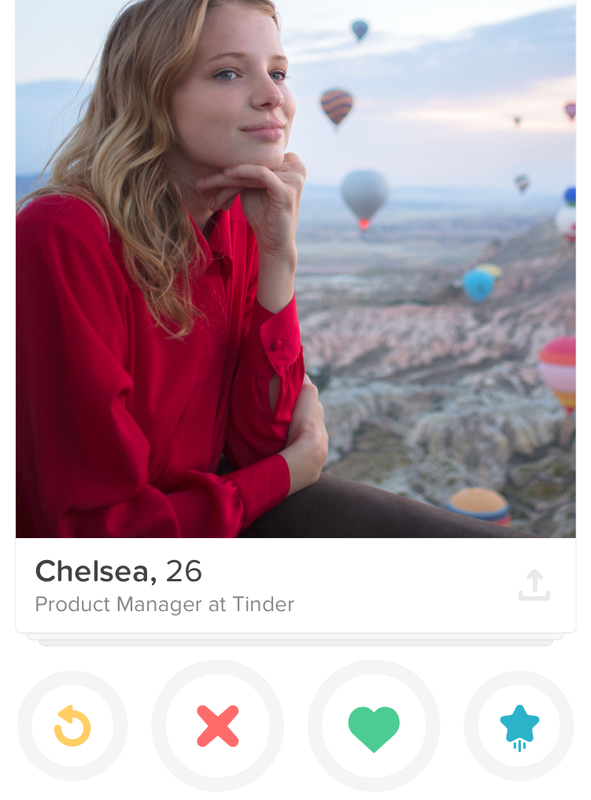
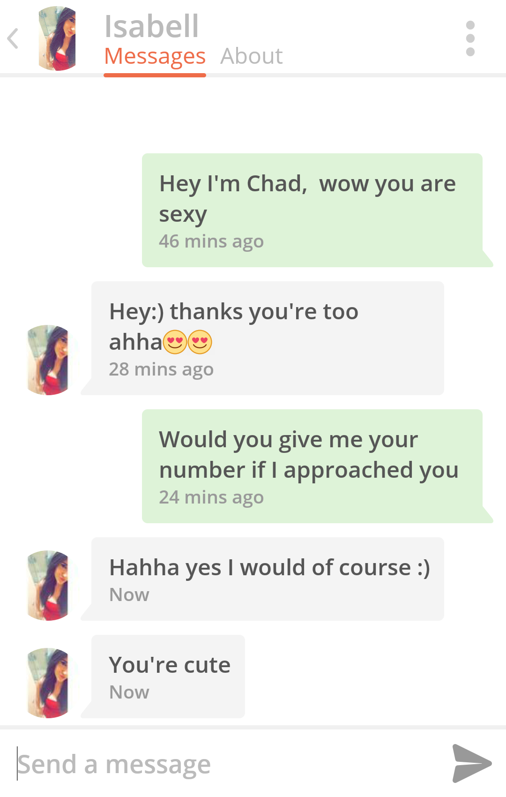
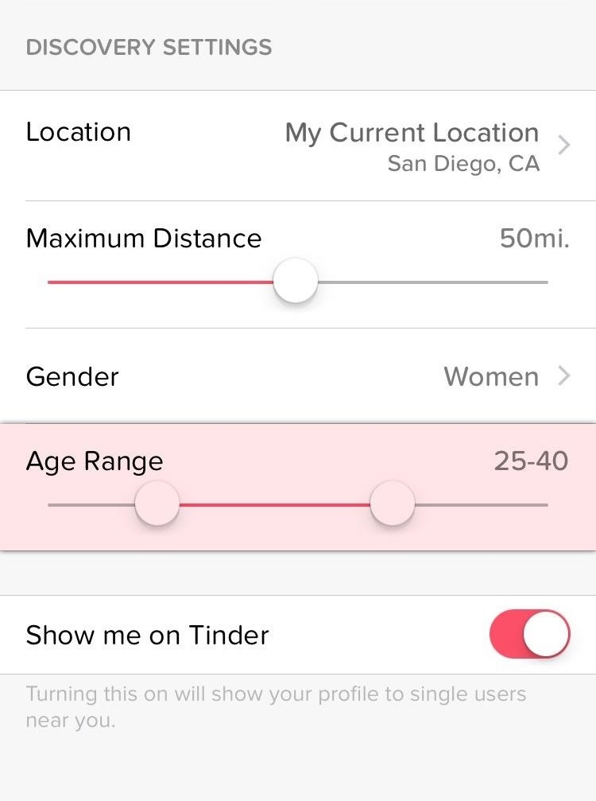

Home Match Chat Settings  Need to add expand div here to show matches profile  Need to figure out the format of chats with multiple users...  Quick setting toggles will go here (Age/Gender Preference)
Need to add expand div here to show matches profile
Need to figure out the format of chats with multiple users...
Quick setting toggles will go here (Age/Gender Preference)